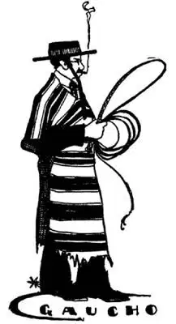
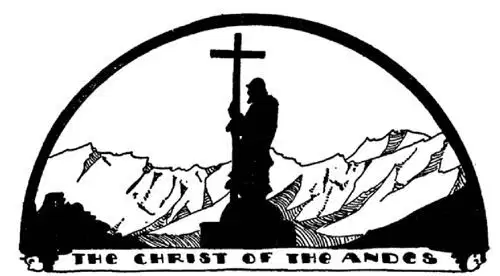

23
Silver Land and Sliver Land
白银之国和棉条之国

WE give babies names when they are born, but sometimes when the babies grow up the names do not fit them. “Charles” means “strong” and “Ruth” means “beautiful,” but when Charles grows up he may not be strong, and Ruth may not be beautiful. You never can tell. When white people came to South America to the land south of Brazil they saw Indians there wearing silver bracelets and silver necklaces, and they supposed there must be a great deal of silver in the land, so they named the country “Silver Land,” which in their language is “Argentina.” But Argentina turned out to have very little silver, yet we still call it Silver Land just the same.

Gauchos wear ponchos
加乌乔牧人穿着南美披风
Although Argentina has little silver, the people there have a great deal of money; in fact, they have more money than any other country in South America. They do not get the money out of the ground, but they make it by selling wheat and meat, so it would have been a more fitting name if they had called Argentina “Wheat Land” or “Meat Land” instead of “Silver Land,” but not nearly so pretty. In Argentina there are enormous farms where they grow wheat and corn, and enormous fields called pampas where they raise cattle and sheep. The men that look after these cattle and sheep we should call “cowboys,” but there they are called “gauchos.” Gauchos wear ponchos. A poncho is a kind of square blanket with a hole in the center through which the gaucho sticks his head. He uses it as a coat by day and as a blanket by night. A gaucho always carries a big knife, which he uses as a sword, as a hatchet, or as a table knife.
Corn feeds the cattle. Cattle makes meat and meat makes money. From the skin of the cattle leather is made, and from the wool of sheep cloth is made, and from both money is made.
Argentina is so much like the United States in a great many ways that it is often called the United States of South America. Both countries are alike in this—that they have hot weather part of the time and cold weather part of the time. But there is this big difference: in Argentina they have winter when the United States is having summer, and summer when the United States is having winter. In Argentina Christmas comes in hot weather and snow and ice in July and August. They have flowers and vegetables and vacations in January and February, and snow and ice and sledding and skating in July.
The capital of Argentina is often called the New York of South America, as it is the largest city of South America, as New York is the largest city of North America. Its name, however, is not New York but “Good Airs,” or, in Spanish, “Buenos Aires.” It is on the Plata River, which is another name that means silver. So we have the city of Good Airs on the Silver River in Silver Land.
In most of the other countries of South America there are many more Indians and Indians mixed with white men than there are white people, but in Argentina most of the people are white. That’s another reason why it is like the United States; but Argentina was settled by people from Spain, not from England, so the people speak Spanish and not English.
Up the Silver River from Argentina, tucked in between the larger countries are two little countries called Uru- and Para- guay. Uruguay and Paraguay are similar to Argentina in many ways. They raise sheep and cattle and gauchos with ponchos. In Para guay they raise a tree from the leaves of which a kind of tea is made. It is called Paraguay tea or maté. It is the chief drink of the gauchos, and many people in South America drink it instead of real tea. It was thought so good that they tried to sell it to other countries. But other countries didn’t care for it as much as for regular tea or coffee. Grown people are like children: what they like they like; what they think they won’t like they don’t like. Most people in the United States like soda-water, but people in other countries usually do not.
The Andes Mountains separate Argentina from a very long and narrow country on the Pacific shore named Chile. Argentina is called the Silver Land. Chile is so long and thin it is sometimes called the Sliver land. Chile doesn’t mean chilly; it means Land of Snow, for most of Chile is mountains, and the mountains are so high there is snow on their tops all the time. Chile and Argentina were once going to war in spite of the wall of mountains between them, but they made an agreement, as Canada and the United States did, that they would not fight. They set up on top of the Andes Mountains a huge bronze figure of Christ holding a cross—they melted their cannons to make it—and on the base they put words which say something like this: “Sooner shall these mountain crags crumble to dust than Chile and Argentina shall go to war with each other—they have sworn it at the foot of Christ.” They have had no fights since. What a pity such an easy way to stop fighting cannot be used everywhere!

安第斯山脉基督铜像
At the foot of Christ, they have sworn not to fight
在基督脚下两国发誓绝不交战
Chile is so long and so thin and has so many mountains it hardly seems a country worth fighting for, but in spite of what seems to be, Chile makes a lot of money. This may seem still more surprising when I tell you that the northern part of Chile is a desert where it often does not rain for ten years at a time. That doesn’t sound like very good land, but it is one of the richest lands in the World. You would never guess why. Of course, nothing will grow there because it is a desert, and there are no diamonds nor gold. It is on account of something you probably never heard of. This something you never heard of is called Nitrate of Soda. It is a kind of salt that was once in the sea. The reason it is so valuable is because farmers all over the World buy it to put on their fields, as it makes vegetables grow so much better. Strange it doesn’t grow anything where it is found; but that is because there is no rain there and nothing will grow without rain. But it is lucky there is no rain, for if there were rain the Nitrate of Soda would melt. This part of Chile is like a long narrow trough. It was once under the sea, then there was an earthquake, and this part of the bottom of the sea rose up and made land; the water in the trough evaporated and left this rough kind of sea salt called Nitrate of Soda. Iodine comes from there too; and who doesn’t know that stinging brown stuff that your mother puts on cuts?
The Valley of Paradise is in Chile—only it isn’t what you would think Paradise would be. It is the chief seaport of Chile, and it is not very lovely and not very healthful. In Spanish it is called Valparaiso.
The capital of Chile is up in the mountains where it is cool and healthy. It is called Santiago, which means St. James.
Columbus tried to go around the World, but didn’t. The first man whose ship went around the World was named Magellan. Magellan sailed across from the other side of the ocean, as Columbus had done, but he went on until he bumped into America. Then he went along down South America, trying to find a way to get through to the Pacific Ocean. He sailed up the Amazon, thinking he might get through there, but he couldn’t. Then he sailed up La Plata, thinking he might get through there, but he couldn’t. Then when he had nearly reached the tip of South America he at last found a way through to the Pacific. This way through was quite crooked, but we call it a strait and we have named it after him—the Strait of Magellan. He saw many fires on the land at his left, whether they were from volcanoes now no longer burning, or made by the Indians, no one knows. At any rate, he named it Fireland, which in Spanish is Tierra del Fuego. The Indians he saw on the right, which is now the southern part of Argentina, had such big feet he called them the big-feet people, which is “Patagonians.”
For hundreds of years other ships followed this same way through that Magellan had taken, for though some went entirely around the outmost island at the tip of South America—the tip called Cape Horn—it was so stormy that way and so rough and dangerous that most ships used the strait. On this strait a little town grew up—a sort of filling station—just to supply ships with provisions they needed to keep on with their voyage, for there were no other places anywhere near, and it was a long voyage down South America on the Atlantic side and up again on the Pacific side. This little town was called Sandy Point, which in Spanish was Punta Arenas. It is the farthest south city in the whole World. As most ships now go through the Panama Canal, Punta Arenas does less business as a filling station, but a new business is taking the place of filling. They raise sheep on Tierra del Fuego, and the wool is brought to Punta Arenas to be shipped to other parts of the World.
【中文阅读】
孩子出生了，就要取个名字，但有些孩子长大后，名字和人并不相称。“查尔斯”含有“强壮的”意思，“鲁丝”含有“美丽的”意思，但是查尔斯长大后，也许并不强壮，鲁丝也许并不美丽。这种事，谁也拿不准。白人来到南美洲，到了巴西南面一个国家，当时他们看见那里的印第安人都戴着银手镯和银项链，就以为这个国家肯定有很多的银子，于是把这个国家叫做“白银之国”，按他们的语言（西班牙语）就是“阿根廷”。但后来发现阿根廷没有什么银子，然而“白银之国”这个名字仍然沿用至今。
尽管阿根廷没有什么银子，那里的人却很有钱；他们甚至比南美洲其他任何一个国家的人都更有钱。他们不是靠银赚钱，而是靠卖小麦和肉类赚钱的，因此如果人们把阿根廷叫做“小麦之国”或者“肉类之国”而不是“白银之国”可能更合适，只是远没有那么好听了。阿根廷有许多广阔的大农场种植小麦和玉米，还有叫做南美大草原的辽阔田野，人们在那里放牧牛羊。我们把照看这些牛羊的人叫做“牛仔”，但是他们却叫“加乌乔牧人”。加乌乔牧人穿着南美披风。南美披风是一种方形的毛毯，中间开有领口，加乌乔牧人穿时从头部套入。他们白天把它当外套穿，晚上就当毯子盖。加乌乔牧人总是带着一把大刀，这把刀既用作剑，又用作短柄小斧，还能作餐刀使用。
阿根廷人用玉米养牛，牛养大后，牛肉可以卖钱。牛皮制成皮革，羊毛可以织布，都可以卖钱。
阿根廷在很多方面很像美国，所以常被叫做“南美洲的美国”。两个国家在这一点就很相像——一年中都是一段时间天气炎热，一段时间天气寒冷，四季分明。不过，还有一个很大的不同之处：阿根廷冬季的时候美国正是夏季，夏季的时候美国正是冬季。圣诞节时，阿根廷夏日炎炎，而七八月份则冰天雪地。一二月份鲜花盛开，新鲜蔬菜大量上市，人们也开始过暑假，七月份冰雪来了，人们就能滑雪溜冰了。
阿根廷的首都经常被叫做“南美洲的纽约”，因为它是南美洲最大的城市，正如纽约是北美洲最大的城市一样。然而它的名字不是纽约，而是“清新的空气”，或者用西班牙语说就是“布宜诺斯艾利斯”。它位于拉普拉塔河畔，“拉普拉塔”在西班牙语中也是“银子”的意思。因此白银之国有一条白银之河，白银之河河边有座“清新的空气”之城。
在南美洲大多数国家，印第安人以及印第安人与白人的混血人种都比白人多很多，但是在阿根廷大部分人都是白人。这是阿根廷像美国的另一个原因；但是阿根廷曾是西班牙人建立的殖民地，而不是英国人建的，因此阿根廷人说西班牙语，而不是英语。
从阿根廷沿白银之河往上走，有两个小国夹在大国之间，叫做乌拉圭和巴拉圭。乌拉圭和巴拉圭在很多方面和阿根廷都很像。他们都放牧牛羊，都有穿着披风的加乌乔牧人。在巴拉圭，人们种植一种树，树叶可以制成一种茶，叫做巴拉圭茶。那是加乌乔牧人的主要饮料，南美洲许多人都喝巴拉圭茶而不喝真正的茶叶。当地人觉得它非常好喝，曾设法将它卖到其他国家去。但其他国家的人对这种茶不怎么感兴趣，他们还是喜欢普通茶或咖啡。成人和孩子一样： 喜欢的就喜欢；觉得不喜欢的就是不喜欢。美国的大部分人喜欢喝苏打水，但是其他国家的人一般都不喜欢。
安第斯山脉把阿根廷和位于太平洋沿岸的一个非常狭长的国家分隔开来，这个国家叫做智利。阿根廷被叫做白银之国。智利又长又细，有时被叫做棉条之国。智利并不是寒冷的意思 [1] ；“智利”的意思是“白雪之国”，因为智利大部分地区都是山脉，山很高，山顶终年都有积雪。尽管两国之间隔着一道高山之屏，智利和阿根廷曾经差点兵戎相见，但是他们后来达成协议，就像加拿大和美国那样，约定永不交战。他们在安第斯山脉顶峰竖立了巨大的基督铜像，铜像手持一个十字架——他们把大炮熔化造了这尊铜像——底座上写着这样的话：“除非安第斯山脉山崩地裂，碎成灰尘，否则智利和阿根廷绝不交战——两国在基督脚下以此为誓。”两国之间从此以后再没有发生过战争。如此简单的方法就阻止了战争，但却不能用在世界各地，真是可惜！
智利地域这么狭长，又有很多的高山，撕毁不值得为之而战，但尽管不像是个好地方，智利却财源滚滚。如果我告诉你智利北部是个沙漠，往往连续十年不下雨，你可能会更吃惊了。这片土地听起来不怎么样，但它却是世界上最富饶的地区之一。你肯定猜不出为什么。当然，那里什么也不长，因为那里是沙漠，那里也没有钻石或黄金。之所以富饶是因为一种你也许从未听说过的东西。这种你从未听说过的东西叫做硝酸钠。它是一种以前在海里的盐。它之所以值钱是因为世界各地的农民都买硝酸钠，作为肥料施到田里，使蔬菜长得更好。奇怪的是能找到这个东西的地方却什么都不长；不过这是因为那里不下雨，而没有雨水什么都不长。但是幸亏那里不下雨，因为如果有雨水，硝酸钠就溶化了。智利这一地区就像一个又长又窄的槽。它曾经在海底，后来发生了地震，这部分海底隆起形成了陆地；槽里的水蒸发之后留下了这种叫做硝酸钠的粗糙的海盐。那里还产碘；你受了点伤，妈妈就往伤口上涂抹一种让人刺痛的褐色的东西，有谁不知道那是什么呢？
智利有个“天堂之谷”——只是它不是你想象中的那个天堂。它是智利主要的海港，风景不漂亮，气候也不令人舒适。这个地方在西班牙语中叫“瓦尔帕莱索”。
智利的首都在高山之上，气候凉爽宜人，叫做圣地亚哥，意思是“圣雅各”。
哥伦布试图环游世界，却没有成功。第一个乘船环游世界的人叫麦哲伦。 像哥伦布一样，麦哲伦从大洋对岸穿越过来，但他一直往前航行，直到碰见美洲。然后他沿南美洲往南走，想找到一条通往太平洋的水道。他沿亚马逊河向上航行，以为从那里可以穿过去，但是穿不过去。后来他又沿拉普拉塔河向上航行，以为可以从那里穿过去，但是又失败了。在他几乎到达南美洲最南端的时候，他终于找到了一个通往太平洋的水道。这个通道弯弯曲曲，但是现在叫做海峡，人们以麦哲伦的名字给它命名——麦哲伦海峡。经过海峡时，他看到左边陆地上有很多大火，没人知道那是现在已不再喷发的火山在当时喷出的火还是印第安人点的火。不管是什么样，他把它命名为“火之地”，在西班牙语中就是“火地岛”。在他的右边，也就是现在的阿根廷南部，他看到那里的印第安人脚非常大，于是把他们叫做“大脚人”，在西班牙语中就是“巴塔哥尼亚人”。
几百年来，其他船只一直沿着麦哲伦走过的这条路线航行，因为尽管有些船绕过南美洲南端最外面的小岛航行——南美洲南端叫合恩角——那里多暴风雨，路途艰险，大多数船还是从麦哲伦海峡走。在这个海峡边兴起了一个小镇——近似于汽车加油站——给过往的船只提供继续航行所需的食物等必需品，因为附近再没有任何其他地方可以这么做了，从南美洲大西洋一侧绕到南美洲太平洋一侧是一段漫长的航程。这个小镇叫“沙点”，在西班牙语中是“彭塔阿雷纳斯”。它是世界上最南边的城市。由于现在大部分轮船从巴拿马运河通过，彭塔阿雷纳斯作为“加油站”的生意就冷清了许多，但是当地兴起了一个新的生意，正在取代原来“加油站”的生意。人们在火地岛养羊，羊毛运到彭塔阿雷纳斯，再从那里运到世界各地。